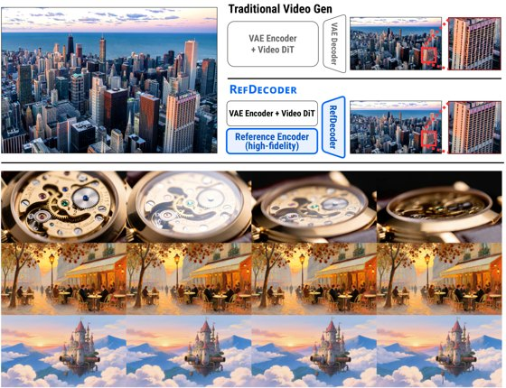

RefDecoder: Enhancing Visual Generation with Conditional Video Decoding
Video Generation
NeurIPS 2026 Co-first author
🏆 Best Paper Award at the AI for Content Creation (AICC) Workshop @ CVPR 2026
Reference-guided video autoencoder that injects high-fidelity details from a reference image directly into the VAE decoder, improving video generation quality as a plug-and-play module.